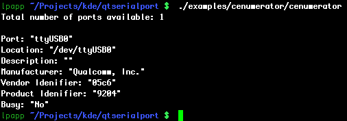

Command Line Enumerator Example
The Command Line Enumerator example shows how to use the class QSerialPortInfo for getting information about serial devices that are present in the system.

example
This command line example displays information about serial ports in a console, provided by the class QSerialPortInfo.
For getting information about the available ports, use the static method availablePorts().
Files: